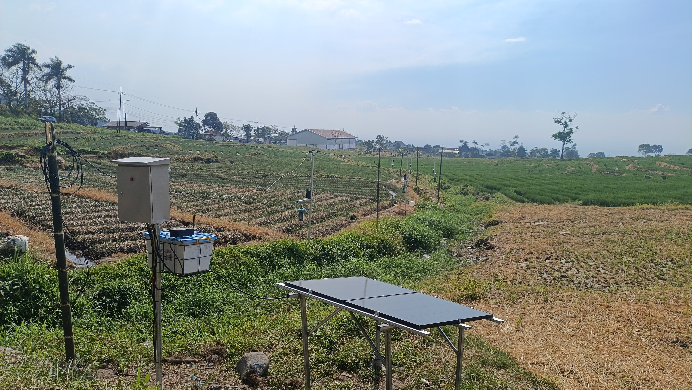
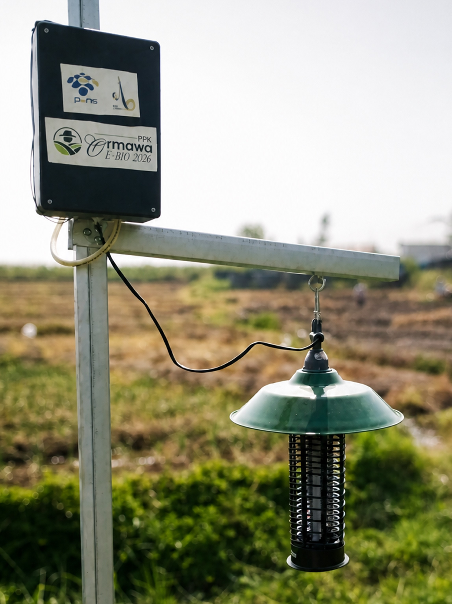
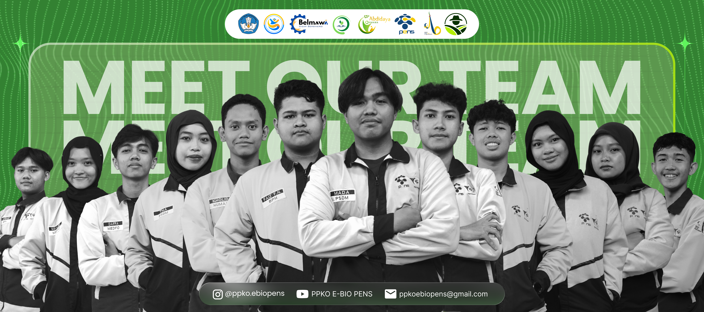

Pratinjau Dokumen
PPK Ormawa E-BIO PENS • Arsip Digital Legalitas

Sistem Light Trap mengintegrasikan lampu UV untuk menarik hama, panel surya sebagai sumber energi terbarukan, serta teknologi komunikasi nirkabel berbasis LoRa untuk mendukung pemantauan kondisi lahan dan status perangkat secara jarak jauh melalui website.

Pemaparan komprehensif alur kerja sistem light trap, implementasi jaringan LoRa di lahan terbuka, serta testimoni kelompok tani.
Sistem pemantauan pertanian bawang merah yang mengintegrasikan perangkap hama bertenaga surya, sensor lingkungan, dan komunikasi nirkabel untuk membantu petani memantau kondisi lahan secara lebih mudah.
Dampak nyata bagi Gapoktan
Berikut adalah lokasi dan kondisi 5 unit perangkap hama yang tersebar di lahan bawang merah Desa Sajen, Pacet, Mojokerto. Setiap unit dilengkapi dengan panel surya, lampu UV, dan sensor untuk memantau kondisi lahan secara real-time.
Publikasi dan apresiasi dari media nasional serta kanal informasi resmi kementerian.
Platform terintegrasi berbasis IoT dan light trap tenaga surya untuk monitoring tanaman bawang merah di Desa Sajen, Pacet, Mojokerto. Terhubung langsung dengan server sistem gapoktansumbermakmursajen.web.id/admin.
Validasi hukum dan perlindungan hak cipta resmi dari Direktorat Jenderal Kekayaan Intelektual (DJKI) Kementerian Hukum dan HAM RI atas 3 pilar inovasi teknologi PPK Ormawa E-BIO PENS (Desain Industri, Paten Alat, dan Web Monitoring).
Inisiasi kelembagaan mandiri di tingkat kelompok tani (Gapoktan Sumber Makmur) bersama Pemerintah Desa Sajen guna menjamin pengelolaan, pengoperasian, serta pemeliharaan berkala ekosistem Light Trap Tenaga Surya IoT di persawahan.
Dedikasi Kolaborasi Multidisiplin Mahasiswa & Dosen Pembimbing Politeknik Elektronika Negeri Surabaya (PENS) untuk Kemajuan Pertanian Desa Sajen.

Jurusan Teknik Elektro, Informatika, Multimedia Kreatif, Mekanika & Energi
Dokumentasi video singkat (Reels) aktivitas pengabdian, instalasi alat, dan sosialisasi petani di Desa Sajen.
Kunjungi dan ikuti kanal resmi kami: @PPKOE-BIOPENS • ID: UCCd546i23bmMdQc01U7Cbag